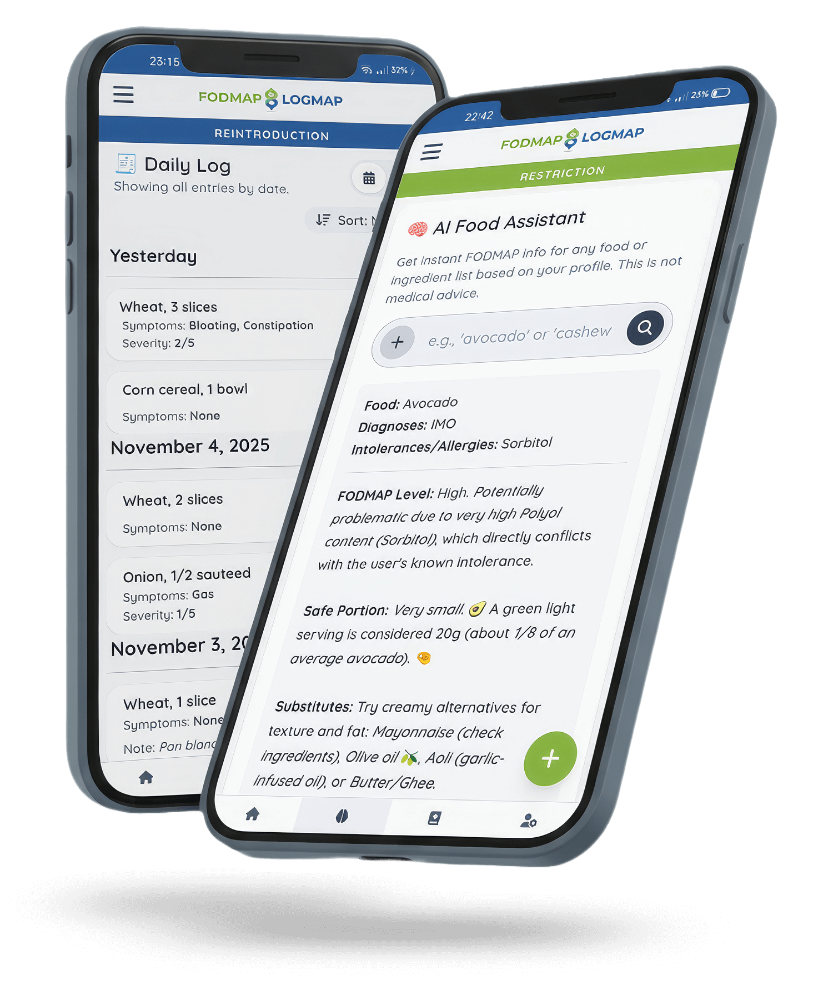

Finally. A FODMAP App That Makes Reintroduction Simple.

Your Toolkit for a Happy Gut
Get started in 3 easy steps
Designed for Humans, Not Scientists
| Main Focus | |
|---|---|
| FodLog Reintroduction & Personal Logging | Other Apps Exhaustive Food Database |
| AI Assistant | |
| FodLog Personalized AI food & camera scans | Other Apps Static food database (no AI) |
| Logging System | |
| FodLog Fast Symptom Logging (1-5 Severity) | Other Apps Complex charts, detailed forms |
| Guidance | |
| FodLog Guided, step-by-step reintro path | Other Apps Clinical info, mostly self-directed |
| The "Feel" | |
| FodLog Motivational, simple, your companion | Other Apps Clinical, academic, a "manual" |